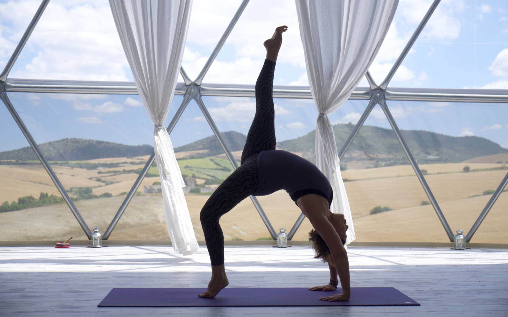

Yoga y Vida es...
Es una forma de acercarnos más a las enseñanzas del Yoga. A una práctica
milenaria, que abarca la totalidad del ser dentro de un todo, que es el
universo. Descubriéndonos, acercándonos a nuestra parte más espiritual,
profunda y propia, podemos ser parte de un saber universal, memoria que
está en nuestros genes, que respeta a todo por igual, incluyendo alma,
cuerpo y mente, y la de todos los seres, a la naturaleza, que la honra y
cuida. Una forma de vida en la cual si la ponemos en práctica, podremos
vivir en armonía estemos donde estemos, con salud y dicha. Bienvenidos a
Yoga y Vida.


Algunas enseñanzas para comenzar:
Los Ocho pasos de Patanjali
Patanjali describió los ocho pasos en el camino hacia la visión del
alma. La práctica del yoga (abhyasa) y el desapego o renuncia (vairagya)
son los medios para detener los movimientos de la conciencia. La
práctica es el aspecto positivo del yoga, e implica yama, niyama, asana
y pranayama. El camino involutivo de renuncia implica pratyahara,
dharana, dhyana y samadhi.
Los yoga sutras de Patanjali:
-
Yama: El primer paso de los 8 del yoga es Yama, el cual tiene como
principios éticos y reglas para vivir en sociedad:
-
Ahimsa: no violencia. No desear herir en palabra, pensamiento u
obra.
- Satya:veracidad. Ser sincero y honesto. No mentir.
-
Asteya: no robar. Ni aprovecharse de una situación que alguien
nos ha confiado.
-
Brahmacarya: continencia sexual. No implica celibato, sino no
desperdiciar la energía sexual, ya que es inmensamente poderosa.
-
Aparigraha: No codicia. Recibir exactamente lo que es justo. No
aferrase a bienes materiales ni a pensamientos o emociones.
-
Niyama: El segundo paso de los 8 del yoga es Niyama que describe las
disciplinas individuales y actitudes hacia uno mismo. Sauca:
limpieza. Tanto externa como interna. Una alimentación equilibrada,
pensamientos puros, y la práctica de asanas y pranayamas limpian el
cuerpo internamente. Santosa: contento. Desarrollar un sentimiento
de contentamiento, independientemente de los resultados de nuestras
acciones. Tapas: autodisciplina. Elimina las impurezas del cuerpo y
la mente. Asana y pranayama son una forma de tapas. Svadhyaya:
autoconocimiento. Reflexión y autoobservación que lleva al
desarrollo espiritual. Isvara pranidhara: Entrega y renuncia. Libera
al practicante de los deseos mundanos.
-
Asana: Asana significa pose o postura y forma parte de los 8 pasos
del yoga. Las asanas son posiciones específicas del cuerpo que
limpian los canales de energía y equilibran el flujo de la misma en
el organismo, generando estabilidad física, mental y emocional.
Estas deben realizarse con plena conciencia y sin esfuerzo, buscando
la calma y la comodidad, y sosteniendo un ritmo respiratorio firme y
constante. Controlando el cuerpo, se controla la mente; las asanas
son herramientas para acceder a estados más elevados de conciencia.
Actúan de manera somato-psíquica: del cuerpo hacia la mente. Se
logra la perfección en asana cuando cesa en esfuerzo, y se obtiene
la relajación manteniendo la estabilidad y la conciencia.
-
Pranayama: La palabra pranayama está compuesta por las raíces
“prana” y “ayama”. “Prana” significa “energía vital” y está presente
en todas las cosas, animadas e inanimadas. Se encuentra íntimamente
relacionada con la respiración y es mucho más sutil que el aire o el
oxígeno. Todo lo que vibra en el universo es prana. “Ayama”
significa extensión, expansión, amplitud, prolongación,
estiramiento. Por lo tanto, la palabra pranayama significa expansión
del prana o energía vital. Las técnicas de pranayama utilizan la
respiración para influir en el flujo de prana en los nadis o canales
de energía del pranamaya kosha o cuerpo energético. La respiración
consta de cuatro partes: Puraka: inhalación. Rechaka: exhalación.
Antarana Kumbhaka: Retención de la inhalación. Bahya Kumbhaka:
Retencion de la exhalación. Las retenciones son la parte más
importante de los pranayamas. Todos los movimientos, incluso la
respiración, crean fluctuaciones en la mente (vittris). Cuando cesa
la respiración se experimenta un estado de “pausa” y se acceden a
niveles más profundos de conciencia. Se corre el velo que cubre la
inteligencia y la luz penetra vigorosamente en las partes mas
profundas del Ser.
-
Pratyahara: Prayahara es el quinto paso de los 8 del yoga y se
concentra en retirar los sentidos, la mente y la conciencia del
contacto con los objetos externos para luego interiorizarse y
dirigirlos hacia el alma. Es la ciencia de restringir los sentidos
privandolos de lo que les alimenta, el mundo objetivo externo. Se
los libera al retirar el suministro de alimento en forma de deseos y
su satisfacción. El objetivo es que los sentidos pierden interés en
sus respectivos objetos (para el ojo, la forma; para el oído, el
sonido; para la nariz, el olor, etc.) y se retiran del mundo externo
para ayudar a la mente en su búsqueda interna.
-
Dharana: Es el 6 paso de los 8 del yoga y significa concentración,
en el que su técnica principal es fijar la conciencia en un punto
fijo. Dharana viene de la raíz “dhr”, que significa “llevar”, es
dirigir la mente hacia un punto fijo, y mantenerla allí por un
tiempo determinado, con una atención unidireccional siendo el paso
previo a la meditación. Mediante la concentración se controlan y
enfocan las funciones de la mente.
-
Dhyana: Dhyana significa meditación y es el paso 7 de los 8 del
yoga. Se basa principalmente en mantener firmemente la dharana, en
el que esta última evoluciona convirtiéndose en dhyana. Es un estado
contemplativo, en el cual la atención pasa de unidireccional a
no-direccional, y el flujo de atención se vuelve regular y continuo.
En este paso, el tiempo psicológico y cronológico se detienen y la
mente observa su propio comportamiento.
-
Samadhi: Samadhi significa absorción total y es el último paso de
los 8 del yoga. Cuando el objeto de meditación absorbe al meditador,
se pierde la consciencia de uno mismo, esta unión de sujeto y objeto
es samadhi. En este paso cesan las fluctuaciones de la mente y se
experimenta un flujo uniforme de conciencia, que impregna los cinco
koshas o envolturas, las cuales se ha purificado y solo reflejan la
luz del alma.